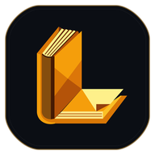

GÜNLÜK HEDEF • LEARNISH
MEB Müfredatı

Kontrol Merkezi
Günün Çalışması
Flashcard
Quiz & Test
Kelime Havuzu
İstatistik & Analiz
MEB
K-12 Müfredat
5. Sınıf • Planlı
YDS
YDS / YÖKDİL
7.387 KELİME
OXF
Oxford 5000
4.886 KELİME
ALL
Tüm Kütüphane
9.234 KELİME
Profil & Ayarlar
Learnish Öğrenim Parametreleri
✕
📚
Kelime Havuzu & Arama
9.234 kelimelik tam kütüphane
→
📊
İstatistik & Analiz
Öğrenim telemetrisi ve kazanım analizi
→
SİSTEM TERCİHLERİ
Telaffuz Aksanı
İngiliz (UK) veya Amerikan (US)
UK
Okuma Hızı
Telaffuz ses hızı çarpanı
1.0x
Ses Efektleri
Etkileşim ve sınav bildirimleri
SES: AÇIK
Karanlık Mod
Charcoal (#171e19) gece teması
TEMA: AÇIK
MEB İNGİLİZCE MÜFREDATI
K-12 Sınıf & Kademe Seçici
✕
SEMANTİK BAĞLAMA MOTORU
Müfredat Bağlama Analizi
✕